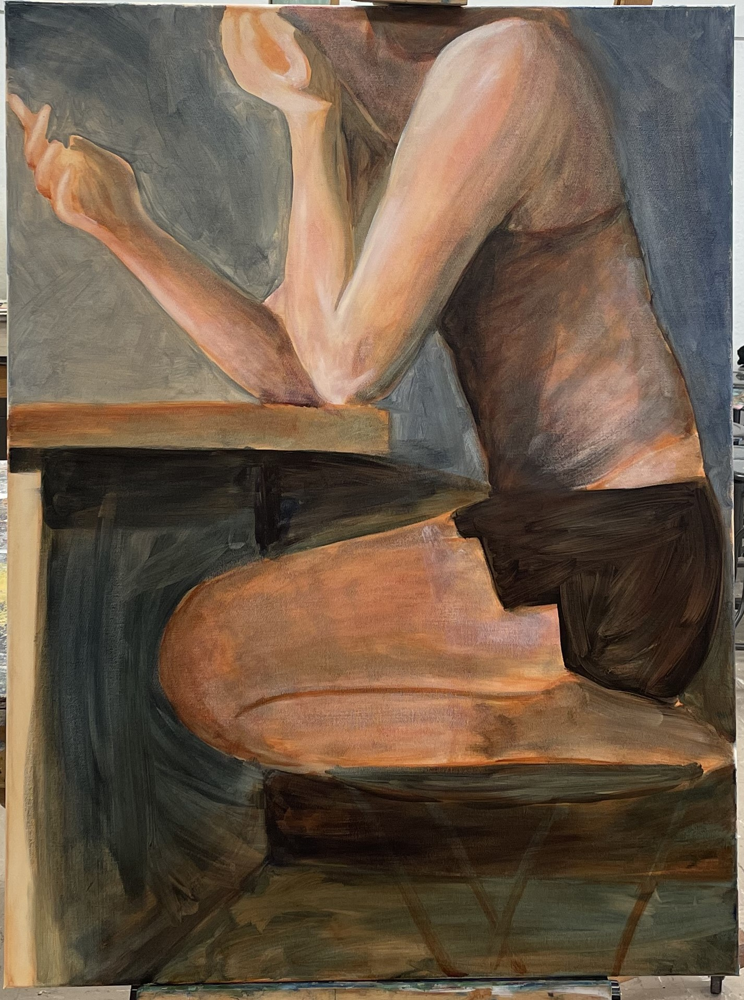
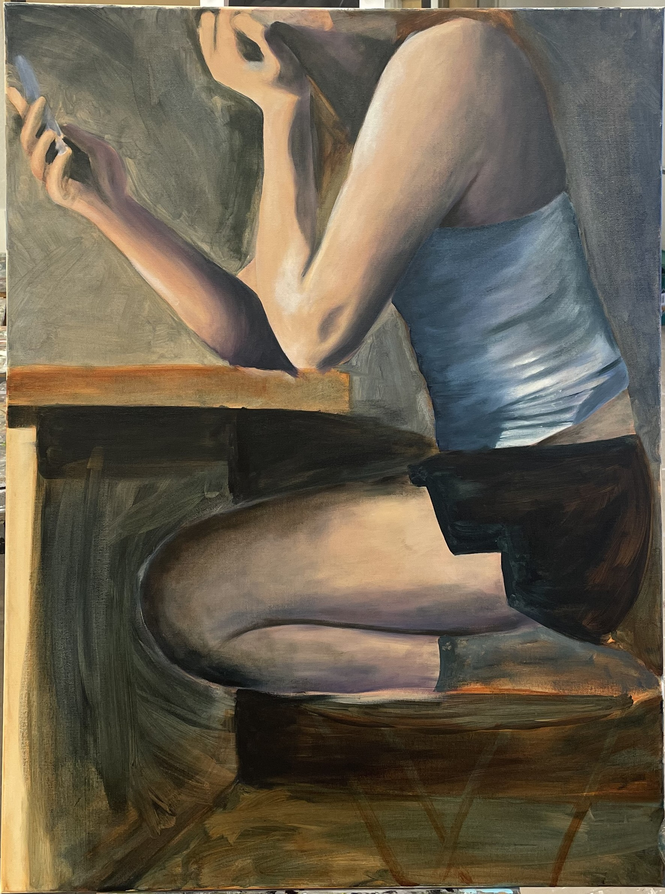
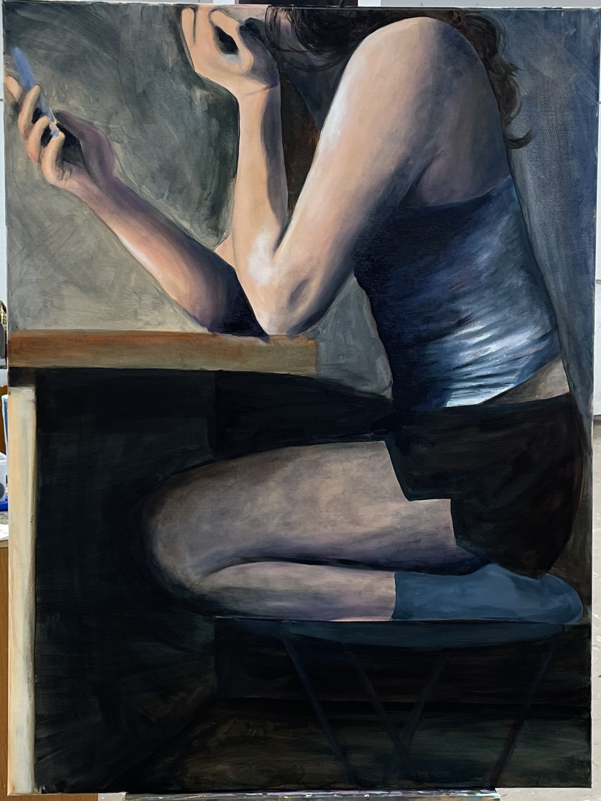

burnt sienna is an important color for the underpainting, but the rest are up to you!
Some of my favorites:
alizarin crimson
phalo blue
burnt umber
Brushes
Medium
Gamsol
Walnut Alkyd
Find a studio space near your area
Step 1: Toning the Canvas
Paint a very thin layer of burnt sienna over the entire canvas. If you are using oil paint, use lots of gamsol to thin your paint down.
Use a rag to spread the paint faster and give a more even finish. This layer should still be very light, but there should still be a
difference between the blank canvas and the final tone.
Step 2: Laying down shadows
Still using only burnt sienna and a rag, lay down the basic shadows and highlights of the painting. This is just a layer to get oriented
with the reference and get the proportions that you want. At this point, it should look something like this:
Keeping in mind that this is the reference photo:
Step 3: Adding Color
This is where most of the fun starts. I prefer to start of with thin layers with lots of gamsol to start adding more color into the painting.
After the first few layers, I start thinning my paint with walnut alkyd to make the paint more vibrant, but still thin and easy to work with.



Step 4: Finishing Touches
The changes get smaller with this step and involve a lot more intention. I like to have other artists look at my work with fresh
eyes and see if they have any changes they would make or like to see. Of course though, take anyones comments with respect but be sure
to know when to leave your piece alone. The only thing to do after this step is learn from what you liked about your painting and what
to work on more in the future. Congrats! You finished a painting!